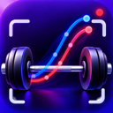

Real outputs from my own training (October 2026), filmed side-on with an iPhone and an M5Stick sensor on the bar. Open any card to see the full file.
Full presentation: LiftMetrics presentation (PDF) · Contact: liftmetrics@icloud.com · Instagram @lift_metrics